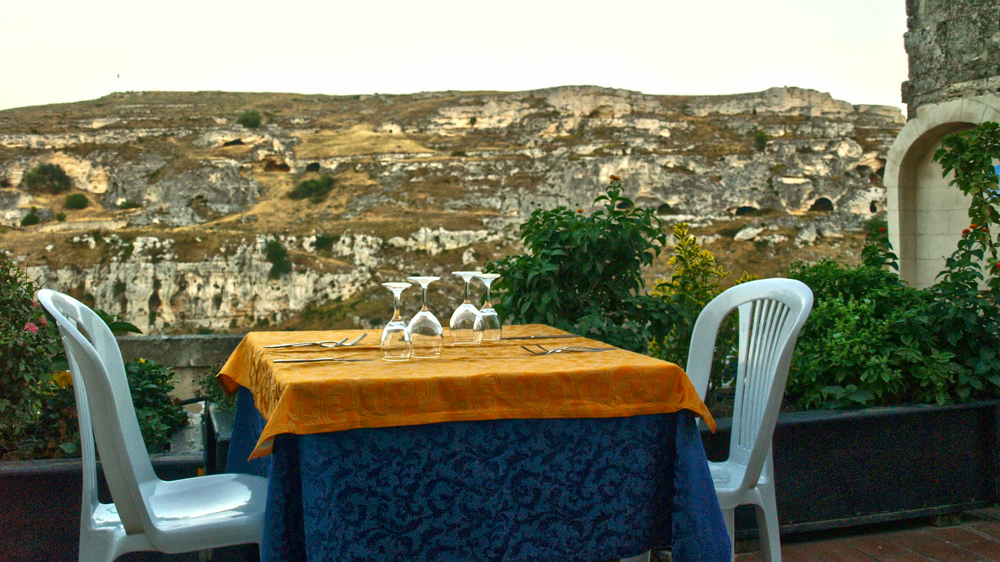
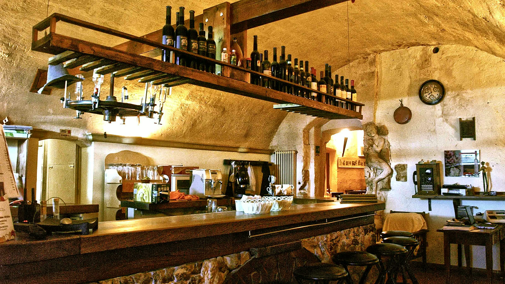
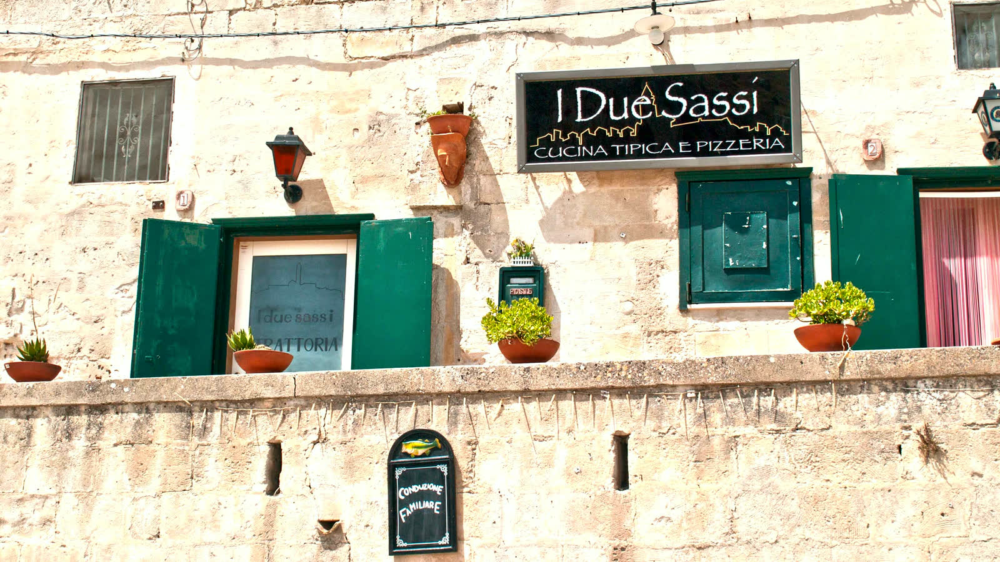
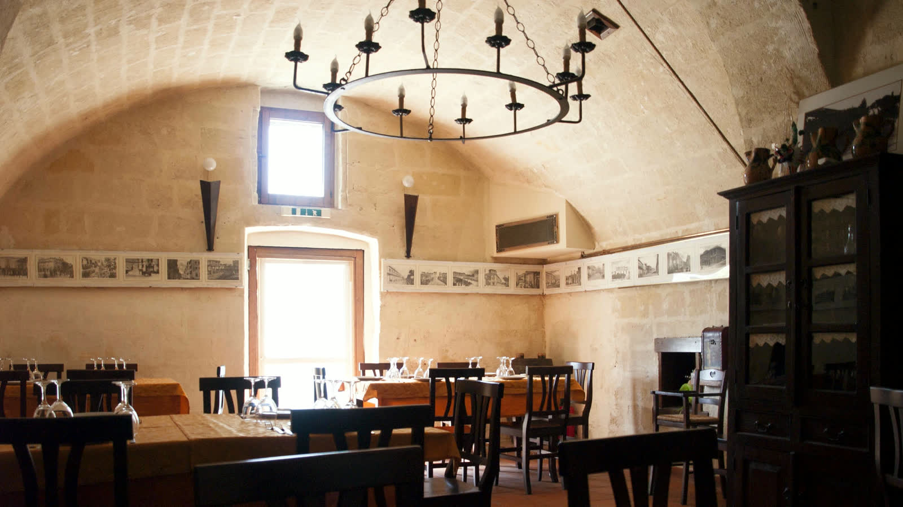
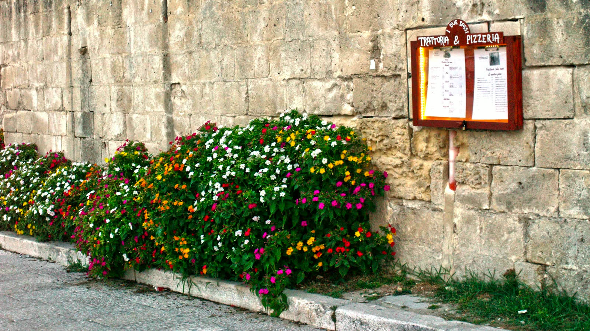

Anna Maria
la cucinaPiatti tipici lucani preparati ogni giorno, con prodotti che arrivano dalle campagne e dalle masserie della regione.

Trattoria · Pizzeria · Matera
La cucina di Anna Maria e la terrazza sulla Gravina, nel punto esatto dove Matera si divide nei suoi due rioni antichi.
Conduzione familiare
La trattoria sta nel punto di divisione dei due rioni antichi di Matera, Barisano e Caveoso. In cucina, in sala e in cantina ci sono tre nomi, non tre reparti.
Piatti tipici lucani preparati ogni giorno, con prodotti che arrivano dalle campagne e dalle masserie della regione.
Sceglie formaggi, salumi e vini uno a uno: Aglianico del Vulture, Primitivo, Greco di Basilicata.
Il figlio: racconta i piatti, consiglia gli abbinamenti e ti fa sedere come si fa con gli ospiti di casa.
La materia prima
Formaggi, salumi, legumi e carni arrivano dalle campagne e dalle masserie della Basilicata.
È la spesa come si faceva una volta: si sceglie con cura quello che c'è di buono, e il menù segue. Anche la pizza rispetta i tempi giusti — impasto a lievitazione lenta, come vuole la tradizione napoletana.

Il posto



«Nel periodo estivo, la cena viene servita in terrazza panoramica, dalla quale è possibile ammirare un paesaggio di rara bellezza.»— il racconto della famiglia
Gallery
Prenota
Siamo nel cuore dei Sassi: da Piazza San Pietro Caveoso, dove si parcheggia, sono altri duecento metri a piedi.
Via Ospedale Vecchio 1, 75100 Matera
Apri in Google Maps
Telefonaci per orari e disponibilità